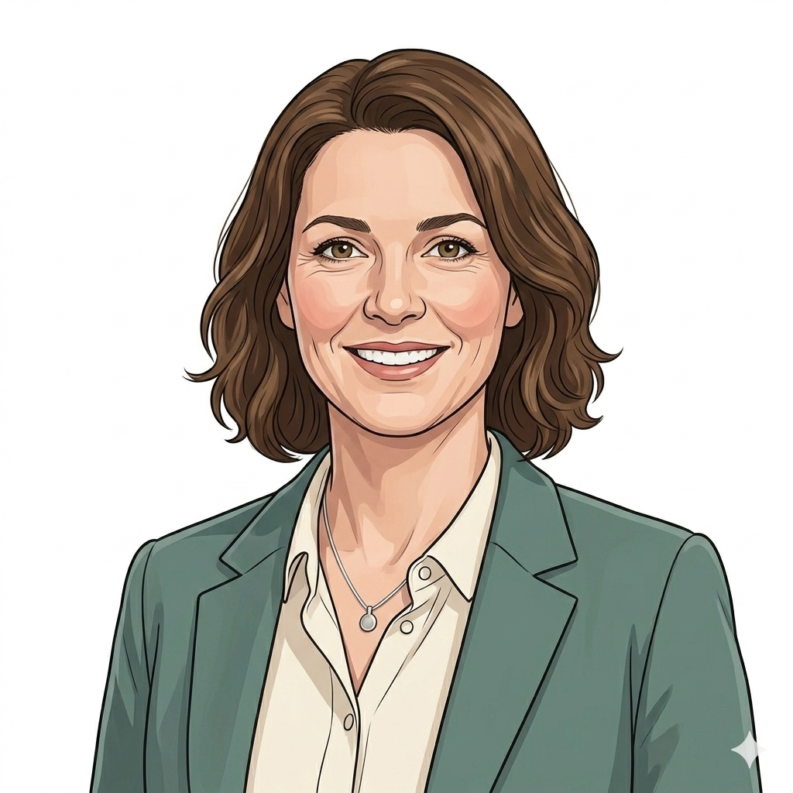
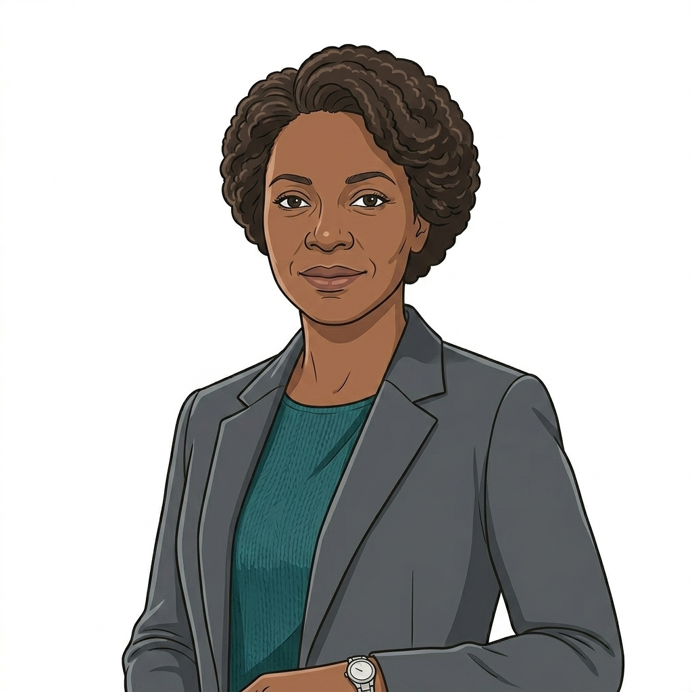
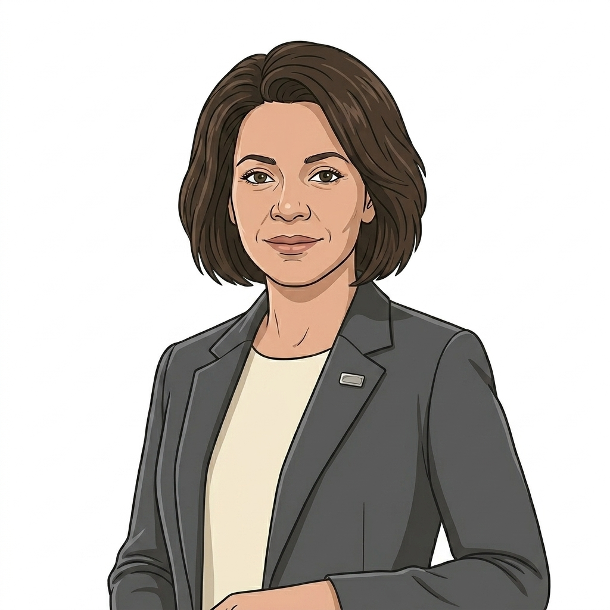

Commissioner.
The buyer at the front of every Digital Therapeutics service. Commissioner is the role; the institution behind it varies by product and by configuration.

The universal-shape commissioner. Local Authority for HomeTest HIV (live), Acute Trust for HomeTest PSA Active Surveillance, established radiotherapy-follow-up cohort, ICB for HealthStore COPD Alpha. Same person, same role, different institution per product.

The commissioner for the PSA Active Surveillance monitoring-gap cohort (men referred to Urology with elevated PSA but no cancer diagnosis). Held open as a separate persona until the cohort discovery team settles the institution. May fold back into Sarah's shape if the answer is an Acute Trust or ICB; remains distinct if a new commissioning body lands.

Acute Trust commissioner for PSA Active Surveillance in the established radiotherapy-follow-up cohort. Commissions secondary-care services under the tariff envelope. She is Mark's commissioner.

ICB or GP-side commissioner for HomeTest HbA1c. Primary-care contract mechanism still in design; funding route through QOF or outpatient tariff being considered. She is Layla's commissioner.

ICB commissioner for HealthStore COPD Alpha. Commissions NICE EVA conditionally-recommended digital therapeutics through the National App Formulary. He is Pauline's commissioner.
About this role
Commissioners are the bodies that hold the budget and sign the contracts that buy what the platform delivers. The role threads through every product, but the institution and budget line behind it varies depending on the configuration.
HomeTest commissioning fragments across the configuration. HIV / patient-init sits with the local authority sexual health budget (Sarah). PSA-AS / clinician-init sits with acute trust commercial commissioning (Catherine, with the monitoring-gap cohort held by Ruth, TBC). HbA1c / GP-init sits with ICB or GP-leaning system commissioning (Anita). HealthStore commissioning sits at ICB level (Daniel). HealthSync will need its own commissioner shape once the first configuration lands.
This role is distinct from David (NHS Commercial), who sits in the universal hub as the central commercial framework holder. David shapes the framework, vehicle and pricing architecture that every commissioner uses. Sarah, Catherine, Ruth, Anita and Daniel sit on the receiving side of that framework, making the actual buying decisions inside their own budget envelope.